lina sim
Hi, I'm Lina :)
I'm a software engineer with 6 years of experience building web products. I love good design, data visualization, and working on fun teams.Outside of work I like working on little art projects, dance and host silly parties for my friends!
work: professional work highlights
tracks
-
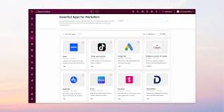
HubSpot Marketplace Unified Marketplace Redesign for Apps, Agents and many more -
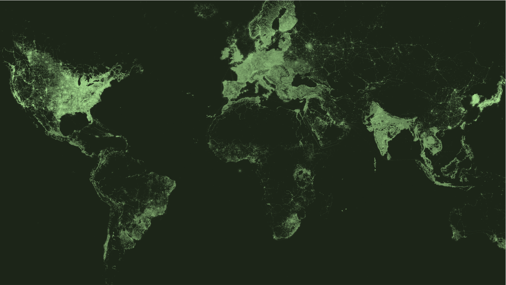
Meta Connectivity Experience building complex, map-based web applications with Mapbox.GL to detect network disruptions -
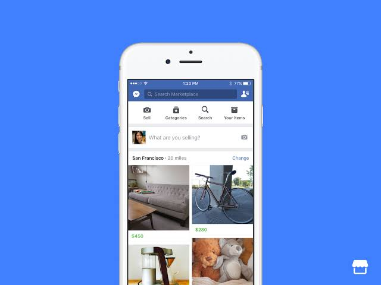
Facebook Marketplace Bringing Ratings and Reviews to FB Marketplace
projects: built for fun
tracks
-
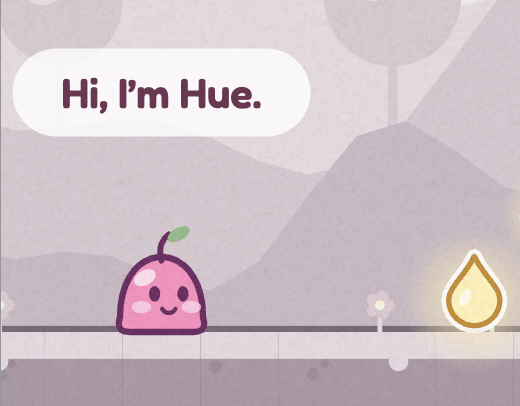
Little Hue A birthday present for my sister: a fun platform game bringing color to worlds. -
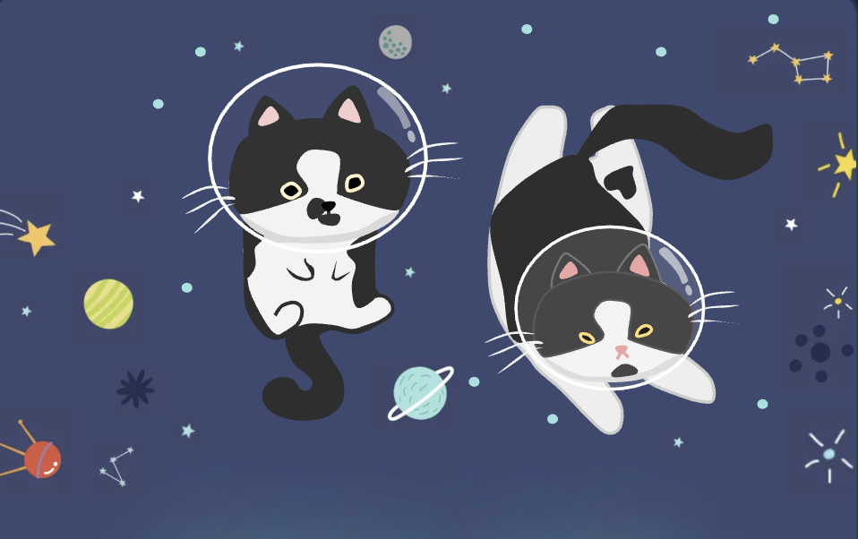
Space Cats Flappy bird but with cats in space! Cats are inspired by real cats, and art was made in Google Slides. -
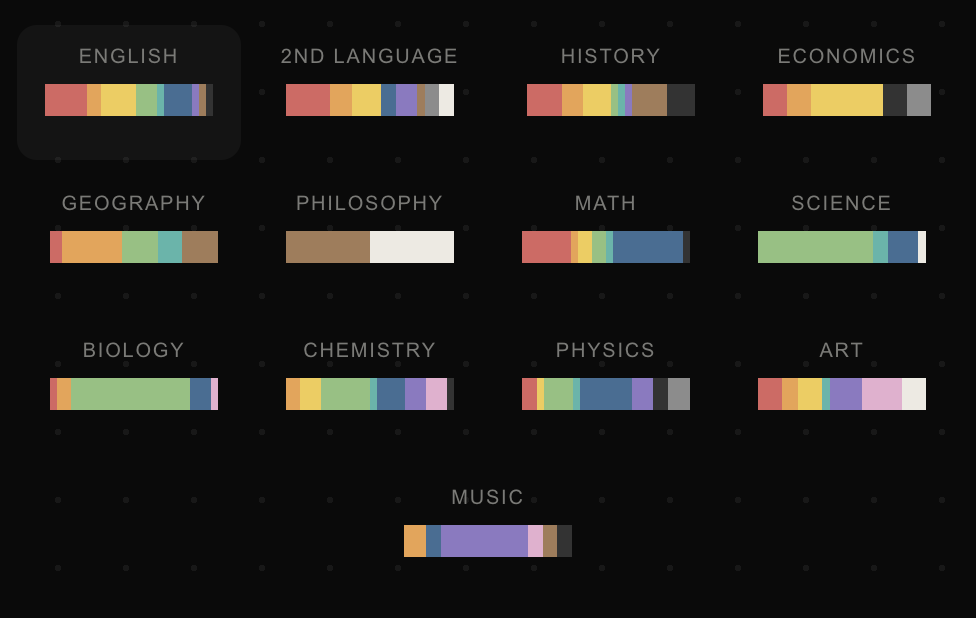
What color is class? A visualization of what colors my friends associated with class subjects.
art: silly arts & crafts projects
tracks
-
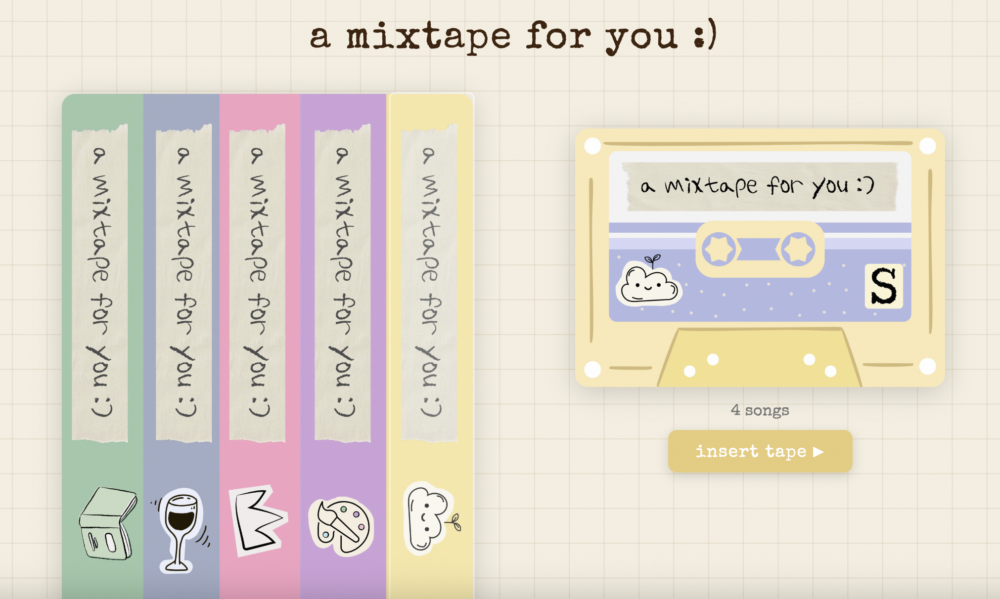
A mixtape for you I made digital mixtapes for all my friends -
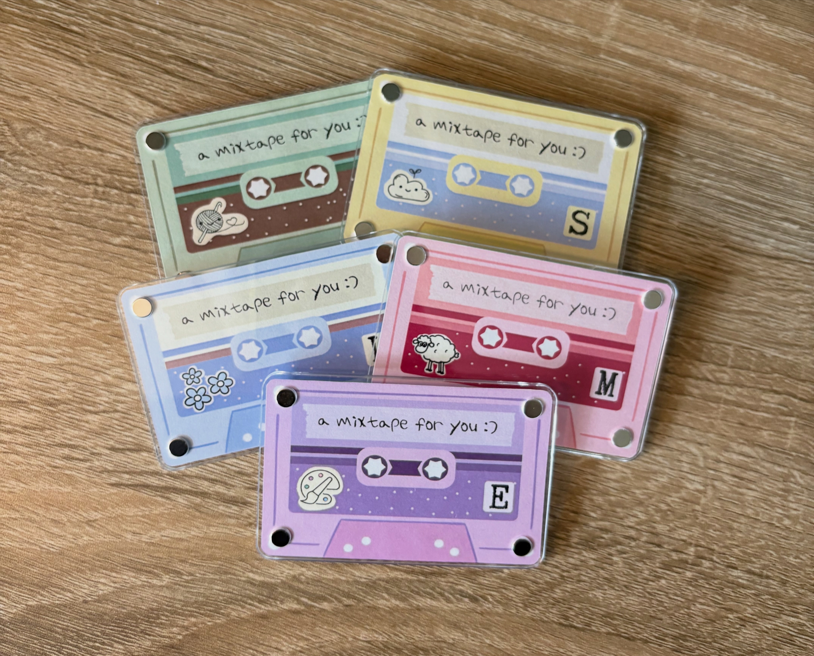
A mixtape for you And then I made them into physical mixtape NFC-enabled magnets! -
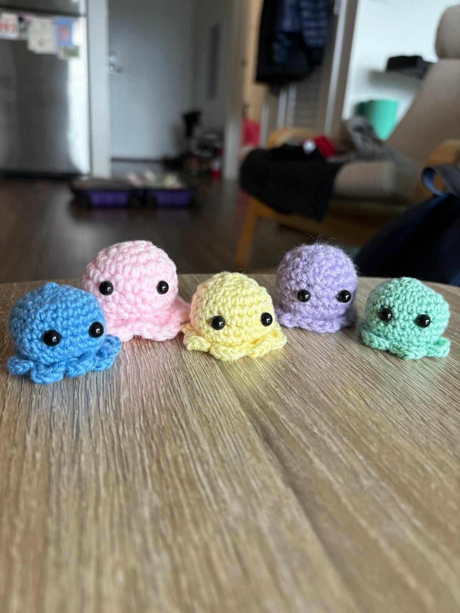
Octopi Army An army of crocheted octopi -
 TeaZines
Made my own zines inspired by tea!
TeaZines
Made my own zines inspired by tea!
-
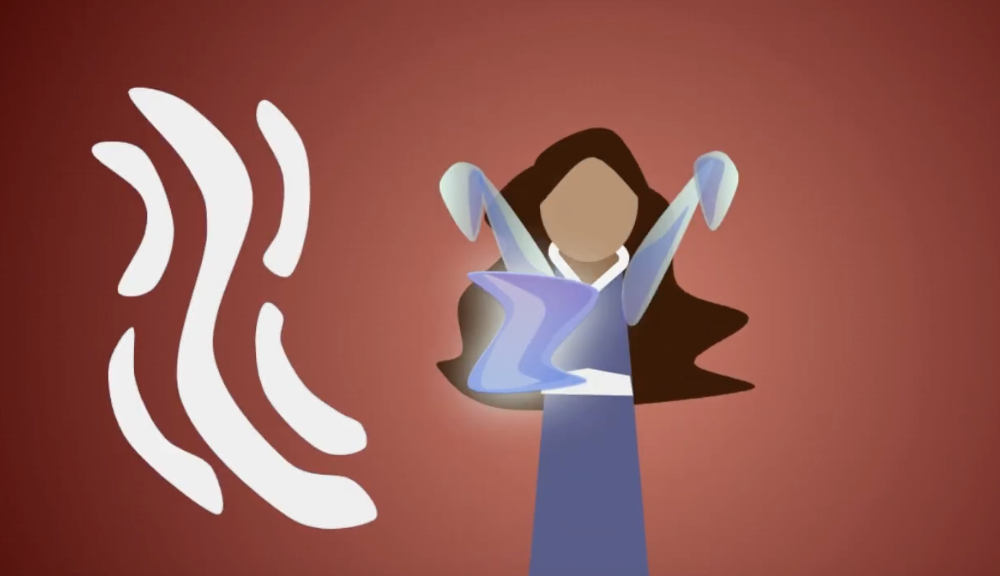
Avatar: The Last Airbender Google Slides Animation. I love making art in Google Slides! -
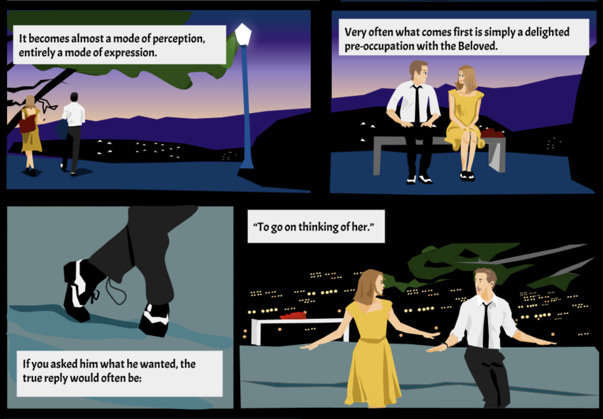
The Four Loves A comic, also made in Google Slides
about: the long version
tracks
- Grew up in Penang, MalaysiaIsland hawker food, humid afternoons, and where it all started.
- High school in ArmeniaA big change of scenery, and a whole new set of friends, food and languages to pick up.
- Moved to the States for collegeCame over for school and stayed to build a career in tech.
- Creating communityI’m happiest when I’m bringing people together, whether that’s a dance crew, a silly party or a fun team at work.
- Making cool thingsGames, visualizations, art and anything else I can build with my hands or in a browser.
- Teaching danceA side hobby I love. Sharing choreography and watching people get excited about moving is the best part.